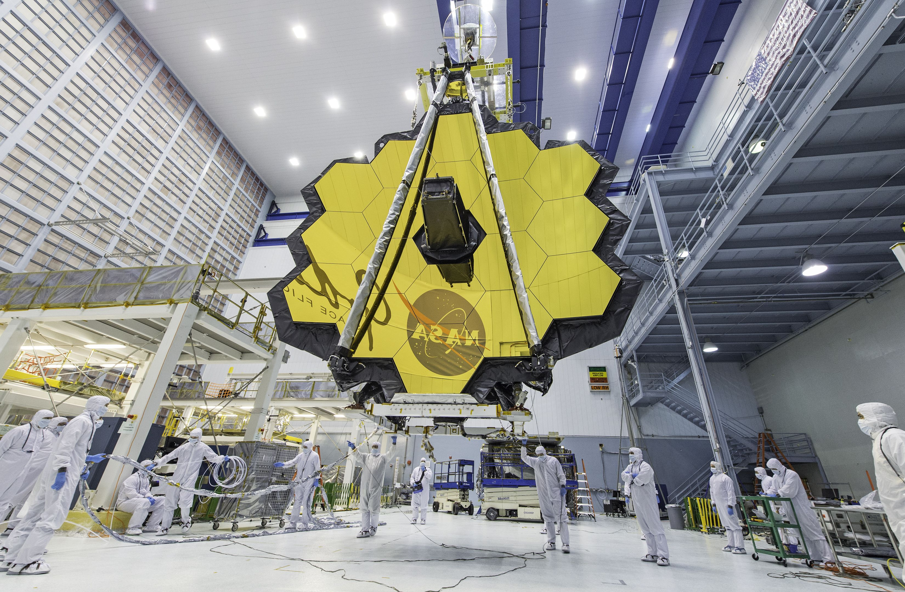

The James Webb Space Telescope has made a groundbreaking discovery by detecting carbon dust in galaxies from the earliest moments of the universe. Using the telescope's remarkable capabilities, a team of astronomers observed indications of this essential element, which is the foundation of all life, in ten different galaxies that existed just 1 billion years after the Big Bang. This finding challenges prevailing theories concerning the chemical evolution of the cosmos. Typically, the processes responsible for creating and dispersing heavier elements like carbon dust would be expected to take much longer to accumulate in galaxies than the age of these young galaxies observed by the James Webb Space Telescope (JWST). "It's incredibly surprising to be able to directly observe and learn about the properties of these dust grains at such an early stage, particularly when we can confirm their carbon-based composition," said Joris Witstok, lead researcher and scientist from the University of Cambridge. "This finding defies what we previously anticipated."
The team's discovery of carbon dust in ten galaxies was made possible through the examination of their light spectra during the JWST Advanced Deep Extragalactic Survey (JADES). This remarkable achievement is a result of elements interacting with light, causing them to absorb and emit it at distinct wavelengths, leaving behind distinct "fingerprints" in the light originating from galaxies and stars. The unmistakable presence of aromatic hydrocarbon dust was revealed by a noticeable "bump" in the absorption of specific ultraviolet frequencies of light. This groundbreaking finding opens new avenues for understanding the early universe's chemical composition and provides valuable insights into the cosmos' evolution.
@2023 SpaceQuest
Terms and conditions
Privacy